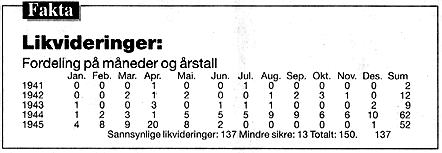

Oppdatert: 14. februar 1996 kl. 10:27
Kronikk, onsdag 14. februar
Likvideringer i Norge 1941-1945
INGER CECILIE STRIDSKLEV
Hittil har man regnet med at i alt 65 mennesker ble likvidert av hjemmefronten i krigstidens Norge: Inger Cecilie Stridsklev har foretatt en grundig undersøkelse av dette, og er kommet til at tallet på sannsynlige likvidasjoner kan være rundt 150, men sikre konklusjoner kan ikke trekkes. Det er på tide at også vi - som danskene - reiser spørsmål om dette, mener kronikøren, som er lege og har utført endel forskning på emner fra krigstiden.
Likvideringer er betegnelsen på drap hjemmefronten foretok på mennesker som var eller ble antatt å være en fare for hjemmefronten. Det tall som oppgis for likvideringer i Norge, er 65. Disse er fordelt på likvideringsår og kjønn. Det er oppgitt at det skal være 63 menn og to kvinner, derav en kvinne i 1944 og en i 1945.
Ved å gjennomgå tilgjengelige, mer eller mindre sikre kilder, har jeg funnet 150 sannsynlige likvideringer.
Det er helt sikkert ikke det nøyaktige antallet. Undersøkelsen er blitt vanskeliggjort ved at mange kilder ikke er tilgjengelige. Dessuten skrev man i norske aviser fra London/Sverige om likvideringer som ikke hadde funnet sted, samtidig som man i Norge var varsom med å offentliggjøre likvideringer, særlig ettersom det utover i okkupasjonstiden - og fremfor alt det siste året - ble stadig flere av dem.
Det er verd å merke seg at den måneden hvor det er kjent overlegent flest likvideringer, er april 1945. Over 100 (2/3) av likvideringene ble etter den her presenterte tabellen utført fra mai 1944 til mai 1945. Det er derfor også usikkert om tallet er for høyt eller for lavt.
Jeg har forsøkt å unngå å ta med dødsfall i forbindelse med sabotasjeaksjoner, heller ikke er det tatt med de egne medarbeidere Rinnan fikk drept, eller clearingdrap, som var et forsøk på å avskrekke hjemmefronten ved å bruke dens egne likvideringsmetoder mot folk som var sympatiske til den, og utgi det for hjemmefrontens verk.
Jeg har tatt med drap i tilknytning til arrestasjoner etter frigjøringen, men ikke i fangeleirer etter krigen. Likevel er antallet likvideringer i alle fall på minst 100. Av dem er det minst 12 kvinner. Ifølge mine tall er det 21 kvinner og 129 menn.
Det typiske likvideringsoffer var en politimann i 20-årene. 23 var frontkjempere. Ofrene hadde svært forskjellige yrker; de var akademikere, kommunalt ansatte, bedriftsledere, folk i kontor- og handelsnæring, håndverkere, vanlige arbeidere og husmødre. Den nest vanligste gruppen var bønder, jegere og skogsarbeidere. Det var folk som var mye ute i skog og mark, og derved kunne komme til å oppdage noe som skulle holdes hemmelig. Alderen varierer fra 19 til 79 år. De fleste var i 20- eller 30-årene. 10-15% var over 50 år. NS-medlemskap er kjent for 66 av de 150. Om 20 vites at de ikke var NS-medlemmer.
Flest likvideringer - mer enn en av fire, ble utført i Oslo. Det var også relativt mange likvideringer i Buskerud, i Østfold og i Telemark. Dette kan ha sammenheng med stor aktivitet og store motsetninger mellom de grupperinger av nordmenn som var aktive i okkupasjonstiden. I Østfold kan antallet ha sammenheng med nærhet til svenskegrensen og flyktningeruter.Bare i Sogn og Fjordane er det ikke kjent noen likvideringer. Til gjengjeld omkom 10 norske varetektsfanger mistenkt for landssvik utenfor Florø 1.9. 1945. De var utkommandert til å dumpe ammunisjon fra en båt, og mistet livet da båten eksploderte.
I Danmark ble det etter krigen tillatt tvil om alle 300 - 400 likvideringer der hadde vært berettigede. Det ble til og med rettslig avklart at enkelte ikke burde vært likvidert. Slikt skjedde aldri i Norge, selv om noen pårørende forsøkte å få sakene opp. En kan undres over om man kan ha latt seg smitte av nazistenes nedvurdering av menneskeverdet til grupper av mennesker.
Quislings forsvarer sa at "NS-medlemmer med Quisling i spissen har levet i sin ideverden og har sett på likvidering av NS-medlemmer på ganske liknende måte som vi har sett på at våre patrioter er blitt skutt ned". "Fortrolig Bulletin", felles for norske i Stockholm og London, melder om en likvidering der det utpekte offeret ikke var blitt skutt, men "liket et stygt syn". Man går ut fra at man har tatt naboen, og ikke den man skulle likvidert, men ettersom også offeret var NS-medlem, gjorde visst ikke det noe!
Det ser ut til at særlig det som skjedde på Telavåg, der en hel bygd fikk lide på grunn av drap på tyskere, gjorde at hjemmefronten, og det engelske S.O.E. (Special Operations Executive), valgte seg norske ofre.
I papirene derfra vurderes flere ganger faren for at tyskerne skal gjennomføre represalier. Det nevnes erfaringer og begrunnelser for at tyskerne ikke gikk til represalier når NS-folk ble drept. Det påstås ofte at likvideringer ble utført på oppdrag fra London.
Selv vet jeg bare om syv som ble "frigitt" til likvidering derfra. Av dem ble kun to, den første og den siste på listen, likvidert. Den første på listen var politipresident Karl Marthinsen, som ble drept 8.2.45. Denne likvideringen førte til at tyskerne foretok represalier. Det ble avsagt 34 dødsdommer, samtidig som det ble henvist til at hjemmefronten hadde forøvet "40 feige mord". Nr. 2 av de 7 på listen, var politiminister Jonas Lie.
Det nevnes flere likvideringer i S.O.E.s papirer, bl.a. av en kvinne som ble likvidert i 1943, da det ifølge den offisielle oversikt ikke forekom likvidering av kvinner.
Johs. Andenæs sier i sin artikkel i Tidsskrift for rettsvitenskap 948 om "Okkupasjonstidens likvidasjoner i rettslig belysning" at de fleste tilfeller ble avgjort her hjemme. Andenæs nevner videre at "Innenfor Hjemmestyrkene var det forbudt for de lokale avdelinger å foreta likvidasjoner på egen hånd, med mindre det forelå en akutt nødssituasjon. Etter de opplysninger jeg har fått fra kompetent hold, kan en gå ut fra at denne ordren var kjent for medlemmene. Men det er naturligvis tenkelig at likvidasjoner er blitt foretatt av hjemmestyrkefolk på egen hånd i strid med de foreliggende instrukser. En må også gå ut fra at likvidasjoner er foretatt av isolerte motstandsgrupper uten tilknytning til hovedorganisasjonen, eller til og med av enkeltpersoner på eget initiativ."
Det er nevnt i S.O.E.s papirer, og i Norsk Tidend (London) for 13. mai 1944 står:
"ANGIVERE skutt i Oslo. Fra Oslo meldes at den kjente angiver, lege Ingolf Andresen, og en kvinnelig medhjelper forleden ble beskutt av en ukjent mann da de skulle forlate en bygning i Oslo sentrum. Mannen forsvant på sykkel. Begge segnet om, rammet av flere skudd. Ifølge de opplysninger som foreligger, døde kvinnen, mens Andresen som ble hårdt såret, antagelig vil stå det over.
Ingolf Andresen, som er 35 år gammel, praktiserte den første tiden av okkupasjonen i Bjørkelangen like ved svenskegrensen, hvor han hjalp flyktninger. Han ble arrestert flere ganger, men slapp ut merkverdig fort. Og det varte ikke lenge før folk forsto at han arbeidet sammen med politiet. Senere flyttet Andresen til Oslo, hvor han fortsatte sin virksomhet. Han var medlem av legesambandet, og måtte på den måten tilkjennegi at han var nazist."
Siden dette likvideringsoffer overlevde, kan en si at dette er den eneste norske likvidering som er rettslig prøvet.I mai 1951 ble dr. Andresen frikjent, etter å ha tilbragt 4 år i fengsler i etterkrigstiden. Han ble spurt om han ville reise erstatningssøksmål mot staten. Han svarte: "Det har jeg ikke tatt standpunkt til ennå." Det sier kanskje noe om dr. Andresens tillit til det norske rettsvesen. Eksemplet viser at det kan være på høy tid å sette spørsmålstegn ved likvideringer også i Norge.
Det er meget som er ukjent om okkupasjonstidens likvideringer i Norge. Jeg er takknemlig både for korreksjoner og ytterligere opplysninger.

[Innhold] [Info] [Aftenposten hjemmeside] [Bakgrunn/Kommentar hovedside]